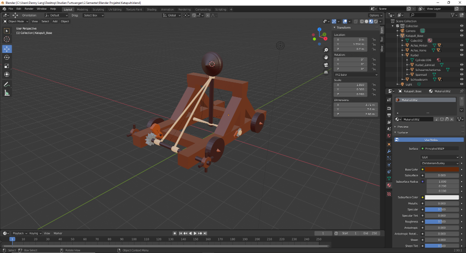
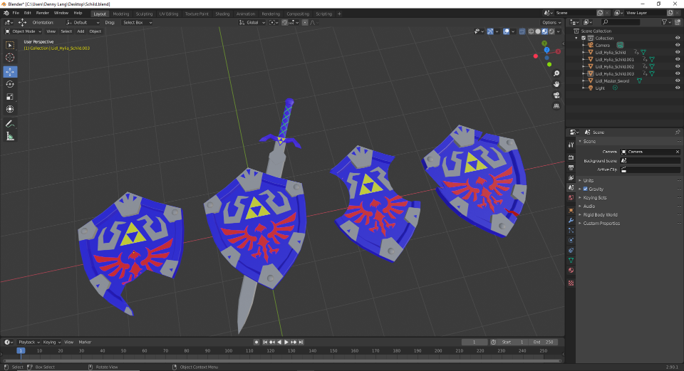
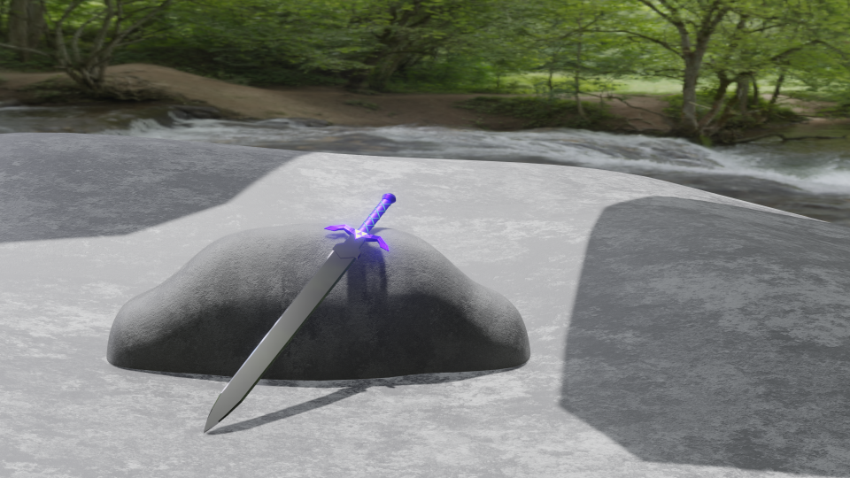
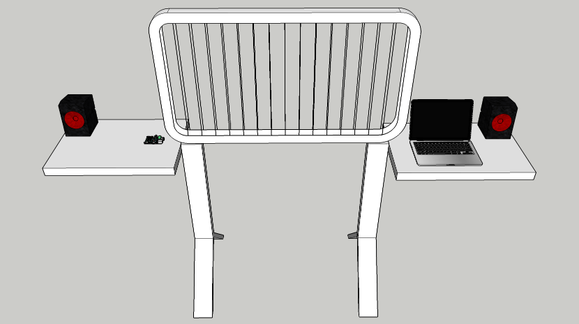
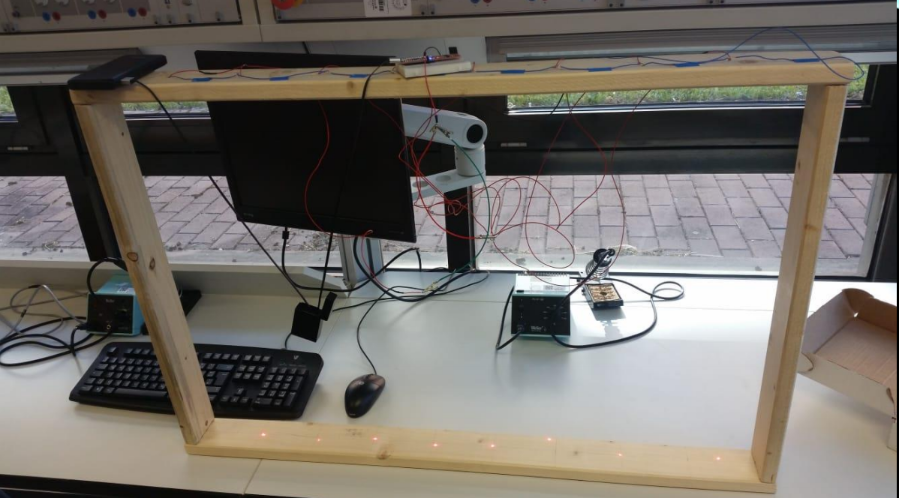

Meine Arbeiten
Blender:
- 
- 
- 
Aufgrund eins schwerwiegenden Softwarefehlers an meinem PC ist es mir leider nicht möglich mehr/aktuellere Arbeiten in Blender zu Präsentieren
Laserharfe
Zusammen mit einem Kollege haben wir in 2018 ein voll funktionstüchtiges eigenes Musikinstrument gebaut. Eine Laserharfe.
Da es von dem vollständigen Orginal keine Bilder gibt ist hier einige Bilder meines eigenen Instruments aus der Erstellungs-/ Zusammenbauphase.
Im jetzigen Zeitpunkt hat die Laserharfe noch volle Funktionstüchtigkeit und hatte auch schon einen kleinen Bühnenauftritt hinter sich, ist aber wegen der extremen Anfälligkeit auf Lichtunterschiede sowie wegen ihrer Unhandlichkeit mittlerweile im Ruhestand. Es gibt jedoch bereits Pläne für eine neue und kompaktere Version.
Für Interresenten hier ist der Schaltplan.